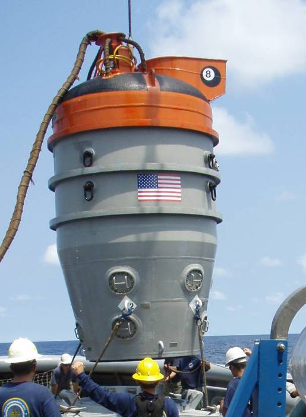

Canada: +1 604 398 4998
Submarine Rescue Systems
OceanWorks International's submarine rescue systems provide a quick response and world wide capability for physical transfer of crew members from a submarine that is disabled and trapped on the sea floor (DISSUB). OceanWorks can supply a variety of unique system and component options for customers to choose from. These include:
- Remotely Operated Rescue Vehicles (RORV) – tethered systems which have the capability of operation in up to 650 meter depths to evacuate 18 personnel per sortie from a (DISSUB) while pressurized at up to 6 bar
- Submersible Rescue Vehicle (SRV) – free-swimming battery operated rescue systems with similar depth and capability as the RORV
- Submarine Rescue Chambers (SRC) – surface supplied, McCann bell type with space for up to 8 people and upgraded for water depths up to 600 meters with transfer under pressure capability
-
Patented articulated mating skirt technology
- Ship Interface Template Sets (SITS) – allow a nation to weld or fasten the connection points for a fly-away submarine rescue (system such as the US Navy’s SRDRS system) to reduce the load out time from the port of opportunity
- Full rescue system ship integration services including design, manufacturing and installation of full service rescue systems including hyperbaric chamber and saturation diving complexes, surface mixed gas diving systems, Launch & Recovery Systems (LARS) and other rescue intervention assets to enhance international submarine rescue cooperation between nations
OceanWorks will work with each customer to arrive at the right system option to suit budgets and operating requirements.
Please see the Military Brochure Here
Remotely Operated Rescue Vehicles

OceanWorks has pioneered technology development for submarine rescue in two key areas:
1) The introduction of our patented articulated mating skirt, which allows a rescue vehicle to lock onto a DISSUB lying at extreme angles (up to 60 degrees) on the sea floor without requiring the vehicle to change pitch or roll. Our skirt is fully compatible with all NATO and other standard submarine mating seats.
2) The introduction of the tethered Remotely Operated Rescue Vehicle (RORV) system configuration, which applies state-of-the-art ROV technology to rescue operations, training, and through-life support.
Used in combination, these technologies provide submarine rescue capability with unlimited power and mission endurance, real time 2-way command, control and communication and unprecedented safety, mating, and maneuvering control.
The RORV technology developed by OceanWorks has been adopted by both the Royal Australian Navy and the US Navy and applies state of the art ROV technology to submarine rescue as well as allows the use of existing worldwide ROV infrastructure, training and equipment resources for system through-life support. The tether provides a physical link with the surface support vessel and the rescue vehicle at all times. This results in unlimited power and real-time, continuous video, sonar, navigation and life support data transfer as well as clear uninterrupted communication abilities. The tether also makes transfer of the vehicle to the surface support mothership safer and more controlled, particularly in higher sea states, without the need for diver support. The patented OceanWorks articulated mating skirt allows the rescue vehicle to orient itself to varying current directions to optimize power use and minimize time required to mate to the DISSUB. In addition, the RORV can maintain a level attitude, a distinct advantage for ease of mating, execution of orderly evacuation, handling injured survivors and reducing ballasting and other control systems complexity.
Launch & Recovery Systems (LARS)

OceanWorks provides custom Launch and Recovery Systems (LARS) handling systems for all of our rescue assets, including the RORV, SRV, ADS, ROV, diving systems, SEVDS and ELSS equipment. We also provide LARS for other custom engineered offshore subsea equipment. LARS are specified, designed, manufactured, and tested to commercial and military certification standards such as NAVSEA, ABS, DNV and other IACS organizations. Launch and recovery systems are configured to meet specific customer operational requirements. Typical design considerations and options include the capability for: air transport, high sea state operation, low temperature designs for polar operations and rapid deployment / custom fit for use on any specified vessel of opportunity (VOO) or dedicated ship. OceanWorks, as a systems integrator, will work with each client to identify the optimal LARS solution. (Datasheet)
Submarine Rescue Chambers

Submarine Rescue Chambers (SRC) are the lowest cost and smallest footprint submarine rescue system available. They are based on older designs, upgraded for deeper operating depth with the addition of transfer under pressure capability. They can be rapidly transported due to small size and light weight when compared to more capable systems. The SRC requires a down-haul cable to be attached to a special pad-eye on the submarine hatch in order to align itself and mate. The SRC requires a diver, HARDSUIT™ ADS or ROV to connect the down-haul cable and requires the surface support vessel to provide precise station keeping. As a result, the SRC has a limited operational window when compared to the RORV solution. Options are available to add thrusters and the OceanWorks patented articulating skirt to increase operational capability. The SRC can be provided with a fully integrated LARS.
Ship Interface Template Sets (SITS)
.jpg)
OceanWorks has developed Ship Interface Template Sets (SITS) to allow partner nations to prepare a vessel of opportunity (VOO) to rapidly install the existing US Navy submarine rescue system in the event of a submarine accident. OceanWorks has developed similar arrangements for the NATO Submarine Rescue System (NSRS). SITS are an approved structural interface that can be fitted to a pre-qualified VOO or dedicated ship during the time that a rescue system is being air transported to the port of embarkation, thus improving time to first rescue. By procuring SITS for forward deployment and identifying suitable vessels of opportunity, navies are able to provide more cost effective submarine rescue support capabilities on a fast response time, based on use of the U.S. Navy PRMS or NATO NSRS systems. For example, The Turkish Navy also contracted OceanWorks to outfit a new, dedicated rescue ship with this capability.
Transfer Under Pressure Capability

Transfer Under Pressure (TUP) capability is a requirement for modern submarine rescue systems since it's been established that survivors will most likely be exposed to elevated pressure for extended periods of time prior to rescue, requiring transfer into a surface decompression and treatment facility. OceanWorks now offers in-house built TUP interface chambers, mating trunks and deck decompression chamber systems designed for safe, efficient transfer under pressure of rescued personnel once the rescue vehicle is secure on the deck of the vessel of opportunity. The integrated decompression system configuration is customized to match the customer’s requirements as driven by the size of submarine crews, ship detail and decompression protocols.
For more information please contact: sales@oceanworks.com